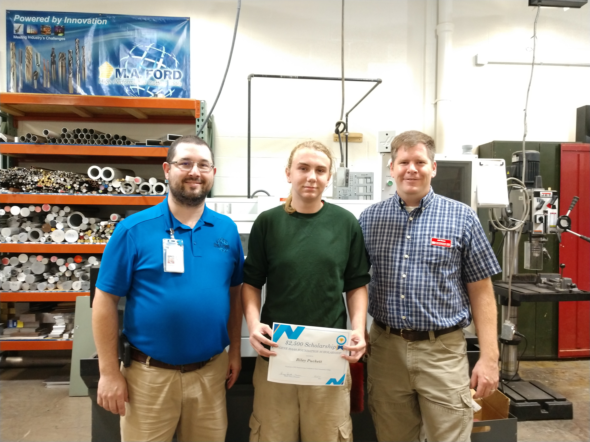

Riley Puckett, a West High senior, received a $2,500 scholarship from the Gene Haas Foundation.
Riley is currently taking classes at the Blong Technology Center (Scott Community College) for CNC Machining / Programming.
The Shaheen yearbook staff would like to thank Cobham for their generous donation. They provided the yearbook with $1,000 to go toward new photography equipment!
